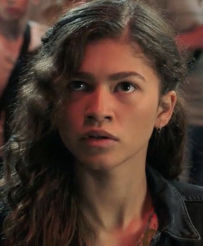
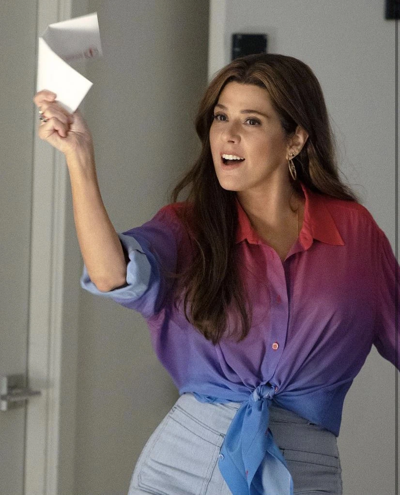

Дата народження: 10 серпня 2001 року (він народився в один рік з Ем-Джей). Статус: Живий (був стертий Клацанням Таноса у 2018 році та воскрешений у 2023 році). Вік: Біологічно йому 17–18 років на момент фіналу трилогії та закінчення школи. Через п'ятирічну відсутність у всесвіті після Клацання його біологічний вік відстає від хронологічного
Пітер Паркер постає як надзвичайно добрий, самовідданий та геніальний підліток, який щодня несе на своїх плечах колосальний тягар супергеройської відповідальності за безпеку інших. Його характер визначається щирою підлітковою наївністю, загостреним почуттям справедливості та безмежною відданістю друзям, заради захисту яких він готовий жертвувати власними егоїстичними бажаннями, коханням та мріями про майбутнє. Попри постійні внутрішні конфлікти, викликані виснажливим подвійним життям, і важкі особисті втрати, Пітер демонструє неймовірну моральну зрілість і здатність до абсолютного самозречення заради вищого блага


Дата народження: 10 червня 2001 року Статус: Жива (була стерта Клацанням Таноса у травні 2018 року, але воскрешена під час Бліпу в жовтні 2023 року) Вік: Біологічно їй 17-18 років на момент закінчення школи (через 5-річну відсутність у всесвіті після Клацання, її біологічний вік не збігається з хронологічним).
Ем-Джей як студенткою Мидтаунської школи науки і технологій, як одна з однокласників і друзів Пітера Паркера. Через роки після від'їзду Ліз вони з Пітером зав'язують романтичні стосунки. Ем-Джей — уїдлива і скромна, але також добра і доброзичлива. Вона постає як ексцентрична, незалежна та гостра на язик дівчина, яка тримає дистанцію з однокласниками та полюбляє глузувати з них. Ем-Джей обожнює читати, цікавиться історією, резонансними злочинами та теоріями змов. Свій вразливий внутрішній світ вона ховає за захисним фасадом із жорсткого сарказму та цинізму. Вона часто виступає як голос розуму, і вона дає Пітеру розраду та поради.
Завдяки своєму видатному, гострому розуму та феноменальній спостережливості, вона самостійно розкриває таємницю Пітера Паркера, здогадавшись, що він і є Людиною-павуком. Ставши його дівчиною, вона перетворюється на безстрашного та вірного напарника. Ем-Джей не залишається осторонь під час небезпек: вона допомагає викрити обман Містеріо в Європі та активно бере участь у вирішенні глобальної мультивсесвітньої кризи, допомагаючи ловити та лікувати прибульців з інших світів.
Повне ім'я: Едвард Лідс (Edward Leeds). Дата народження: 10 листопада 2001 року. Статус: Живий (став жертвою Клацання Таноса у травні 2018 року, але був воскрешений у жовтні 2023 року). Вік: Біологічно йому 17–18 років на момент закінчення школи та вступу до коледжу у 2025 році. Через п'ятирічний Бліп його біологічний вік відстає від хронологічного.
Нед Лідс постає як щирий, ексцентричний та неймовірно відданий оптиміст, який є незмінною емоційною опорою та технічним мозком у супергеройських пригодах. Його характер визначається палким захопленням наукою, поп-культурою та конструюванням LEGO, через що він із гордістю бере на себе роль офіційного «хлопця в кріслі». Попри свою початкову підліткову наївність та прагнення використати таємницю друга для підвищення соціального статусу в школі, Нед демонструє абсолютну відданість дружбі, високий інтелект хакера та несподівану інтуїтивну здатність до магії

Повне ім'я: Мейбелль Паркер (у дівоцтві — Райллі) Дата народження: 1964 рік. Статус: Мертва (загинула в листопаді 2024 року). Раніше ставала жертвою Клацання Таноса у травні 2018 року, але була повернута до життя у жовтні 2023 року. Причина смерті: Отримала смертельні поранення під час атаки Зеленого Гобліна, який збив її своїм глайдером і підірвав будівлю гарбузовою бомбою.
Мей Паркер постає як енергійна, приваблива та прогресивна жінка з бунтарським минулим, яка повністю присвятила себе самостійному вихованню свого осиротілого племінника Пітера. Її характер визначається безмежною добротою, загостреним почуттям справедливості, емпатією та самовідданим прагненням допомагати людям, що привело її до активної благодійної діяльності в організаціях Армія Спасіння та F.E.A.S.T.. Мей є головним моральним компасом франшизи; вона не просто приймає альтер-его свого племінника, а надихає його використовувати свої сили заради вищого блага та порятунку навіть найбільш заплутаних душ, залишаючись вірною своїм високим гуманістичним ідеалам до останнього подиху.
Повне ім'я: Едріан Тумс Дата народження: невідома Статус: Живий, перебуває під вартою Вік: Точний вік у фільмах не називається
Едріан Тумс постає як прагматичний, вольовий та глибоко сімейний чоловік, який перетворюється на безжального кримінального авторитета через несправедливість системи. Його характер визначається залізною діловою хваткою, лідерськими якостями та сильним почуттям класової ворожнечі до таких мільярдерів, як Тоні Старк, чиї капітали, на його думку, побудовані на збитках звичайних робочих людей. Попри те, що Тумс здатен на жорстоке вбивство заради збереження свого бізнесу в таємниці, він має власний кодекс честі та почуття вдячності; дізнавшись, що Людина-павук — це підліток Пітер Паркер, який урятував його доньку, він відмовляється видати його особу іншим злочинцям у в'язниці.
Повне ім'я: Квентін Бек (Quentin Beck). Дата народження:невідома Статус: Мертвий (загинув улітку 2024 року). Причина смерті: Отримав випадкове смертельне поранення від вогню власного бойового дрона через хаос під час битви.
Квентін Бек постає як надзвичайно амбітний, егоцентричний та озлоблений геній, який ховає свою нарцисичну натуру під маскою благородного та трагічного супергероя. Його характер визначається глибокою образою на Тоні Старка, жагою до всесвітнього визнання та маніпулятивним розумом вищого ґатунку. Бек має цинічний погляд на людство, щиро вважаючи, що суспільство є настільки легковірним, що готове повірити в будь-яку брехню, якщо вона яскраво подана. Будучи неперевершеним актором і стратегом, він безжально використовує підліткових супергероїв, готовий піти на масові вбивства та руйнування цілих міст заради створення власного культу особистості та здобуття абсолютної влади.